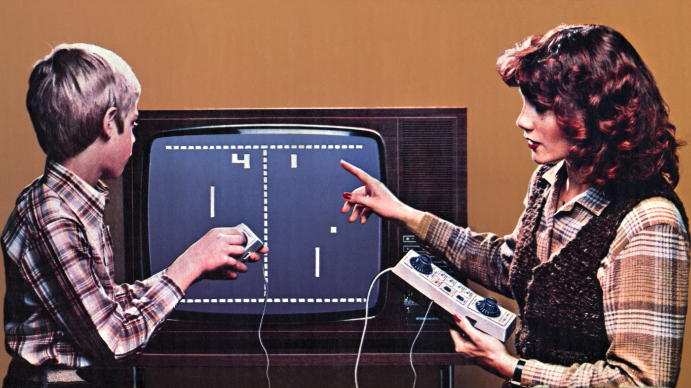

Entre 1958 et 1970, le monde a vu naître les prémices de l'ère numérique. Cette période, marquée par des innovations technologiques majeures, a posé les fondations de l'interaction homme-machine. En 1958, le premier jeu vidéo, "Tennis for Two", conçu par William Higinbotham, a offert un aperçu des possibilités interactives des ordinateurs. Parallèlement, des avancées comme le développement des premiers langages de programmation et les débuts d'Internet avec le projet ARPANET ont amorcé une transformation radicale des communications et du traitement de l'information. Ces années pionnières ont ainsi jeté les bases des technologies numériques qui dominent notre quotidien aujourd'hui.
